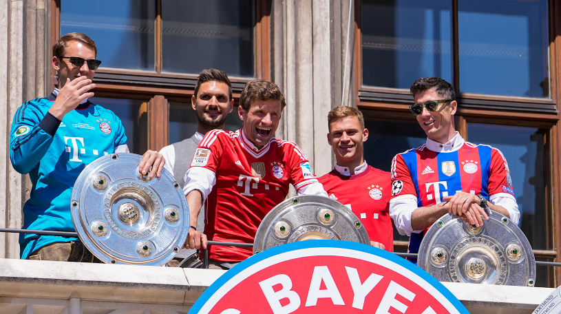

El Bayern le gana 3 a 1 al Dortmund y consigue su decimo titulo consecutivo de Bundesliga
- Serge Gnabry 15'
- Robert Lewandowski 34'
- Jamal Musiala 83'

Aplausos para el campeón alemán: A 9 grados y con una lluvia continua en la Säbener Straße, el personal brindó a Julian Nagelsmann, a su equipo técnico y a la plantilla un caluroso recibimiento
Grandes promesas de las juveniles en el comienzo del primer equipo.

- Chris Scott-Atacante,19años
- Rémy Vita - Lateral izquierdo, 20 años
- Jamie Lawrence - Defensa central, 18 años
- Armindo Sieb - Atacante, 18 años
- Torben Rhein - Centrocampista ofensivo, 18 años
- Taylor Booth - Centrocampista, 20 años